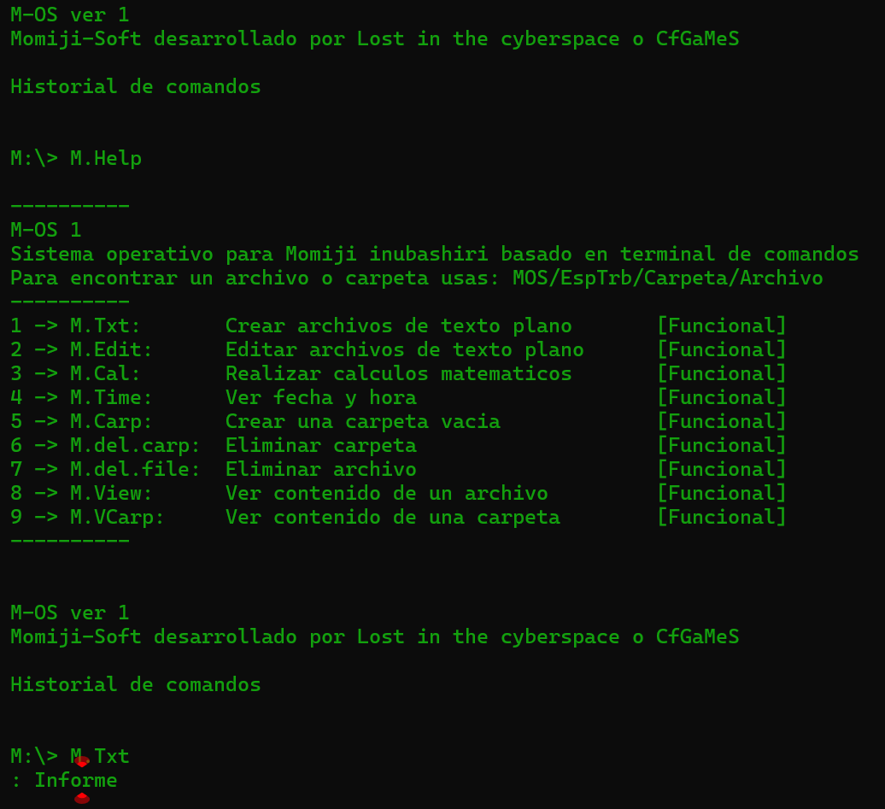

Hay que aclarar un par de cosas:
Muchos proyectos estaran repetidos debido a que en mi proceso de aprendizaje, cada vez que aprendo un nuevo lenguaje de programacion replico proyectos anteriores para asi tener practica rapida y fortalecer la logica
Gracias a ello, si miras un proyecto hecho en Java y se repite en Python, C y demás es justamente por esa regla de estudio que hice para mi
Momiji_OS: Es un intento de emulador de sistema operativo, construido ya que siento una gran fascinacion por los OS basados en terminal de comandos como lo fue CP-M Y MS-DOS
Bautice este emulador con el nombre de Momiji ya que me dispuse a averiguar cuales eran las herramientas que una patrullera como ella necesita en su trabajo

Momiji_OS: La version hecha en Python del emulador de OS